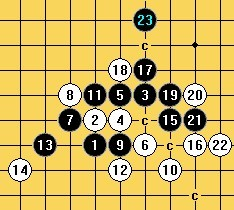

请教一个疏星变化
#1 请教一个疏星变化 作者：米 发表时间：2009-10-12 0:32:05
=======上图对应的爱五子棋谱代码如下，以便你拆解：========
h8h9j10i9i10j8g9g10i8k7h10i7f8e7k9l8j11i11
======================================================
这个疏星变化如果白18走j12,黑可以用“转”字诀绕场一周以上必胜，但这个白18挡住了一个关键斜线，黑只好另图它法，不知道黑应该如何进行。
［ 茗弈小刀 于 2009-10-12 10:33:45 时花20金币送鲜花一朵］
#2 Re:请教一个疏星变化 作者：sonix 发表时间：2009-10-12 9:20:15
［ 茗弈小刀 于 2009-10-12 10:33:27 时花20金币送鲜花一朵］
［ 米 于 2009-10-12 11:00:22 时花20金币送鲜花一朵］
#3 Re:请教一个疏星变化 作者：uniwin 发表时间：2009-10-12 9:22:58
这个，论坛上有人发过了，19-k10冲四，21-L9活三，然后黑胜。
 疏星分支.rar
疏星分支.rar
［ 茗弈小刀 于 2009-10-12 10:33:36 时奖励此帖[金币加 20 威望加1］
［ 米 于 2009-10-12 11:00:37 时花20金币送鲜花一朵］
#4 Re:请教一个疏星变化 作者：茗弈小刀 发表时间：2009-10-12 10:34:48
这个杀以前记得五子痴发帖考过大家,我知道逆刃早就杀出了.
#5 Re:请教一个疏星变化 作者：岑小鱼 发表时间：2009-10-12 21:51:00
这个变化不会 把另外一个18的也发上来学习啊?
16反挡眠三？